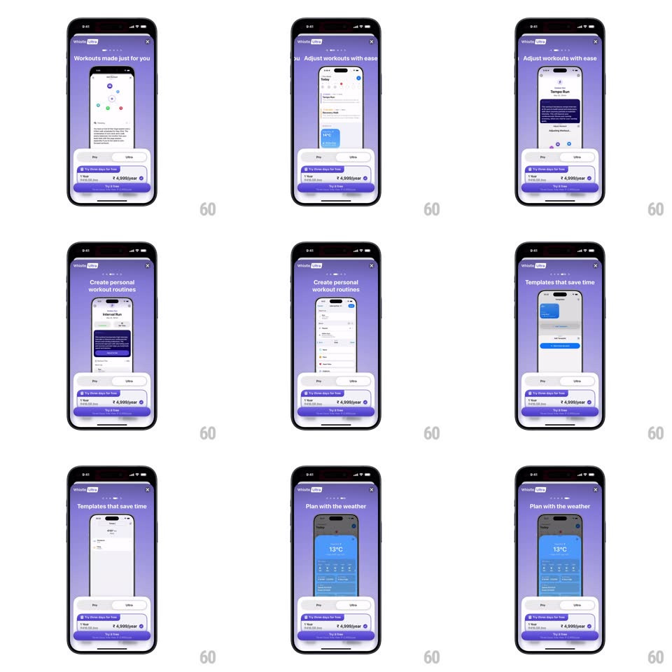

Media
Frame-by-frame

Rebuild this animation 1:1: Whistle's Ultra paywall carousel - a centered phone mockup auto-cycles feature pages ("Workouts made just for you", "Adjust workouts with ease", "Create personal workout routines", "Templates that save time", "Plan with the weather") above a fixed Pro/Ultra plan panel.

Rebuild this animation 1:1: Whistle's Ultra paywall carousel - a centered phone mockup auto-cycles feature pages ("Workouts made just for you", "Adjust workouts with ease", "Create personal workout routines", "Templates that save time", "Plan with the weather") above a fixed Pro/Ultra plan panel.
## Integration
Integration: stack-agnostic spec - springs given as stiffness/damping, timed motions as duration + curve; map every value to your framework and animation library of choice.
## Scene
Purple gradient paywall: "Whistle ULTRA" wordmark with X, page dots, a large headline, a phone mockup showing the feature screenshot, and a bottom panel: Pro/Ultra segmented pill, "Try three days for free" checkbox, "1 Year - ₹ 4,999/year" row, and a purple "Try it Free" button.
## Motion spec
Pattern: auto-play mockup carousel, ~3s per page.
- Cycle: every 3s the headline crossfades (250ms) and the mockup's inner screenshot slides horizontally to the next page (350ms, ease-out), the next page peeking in from the right.
- Advance: the active dot fills left-to-right over the 3s as a progress bar, then swaps.
- Settle-in: the screenshot's content animates once per arrival (subtle rise 8px, 250ms) while the phone frame stays still.
- Interrupt: a manual swipe switches pages with drag tracking and restarts the 3s timer.
## Calibration
- Only the mockup content and headline change; the plan panel is fixed.
- The dot progress resets per page - it is a timer, not a position indicator.
## Reduced motion
Pages crossfade without slide (300ms); the auto-advance stops after the first pass.
## Don't miss
- The phone frame never moves - the animation lives inside its screen.
- Page order is fixed; the last page loops back to the first without reversing.